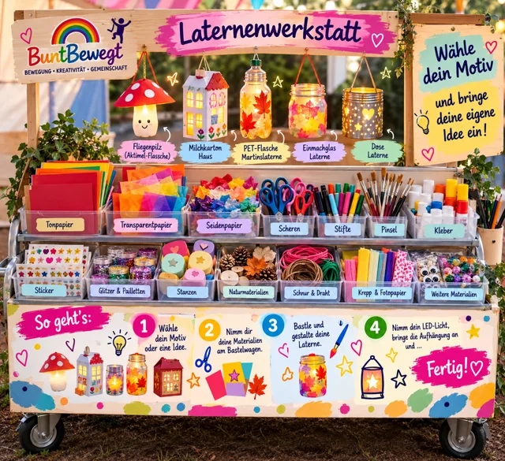
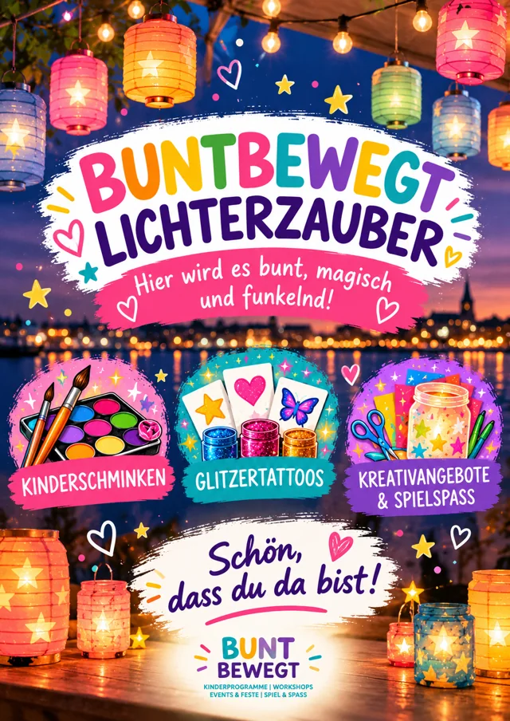
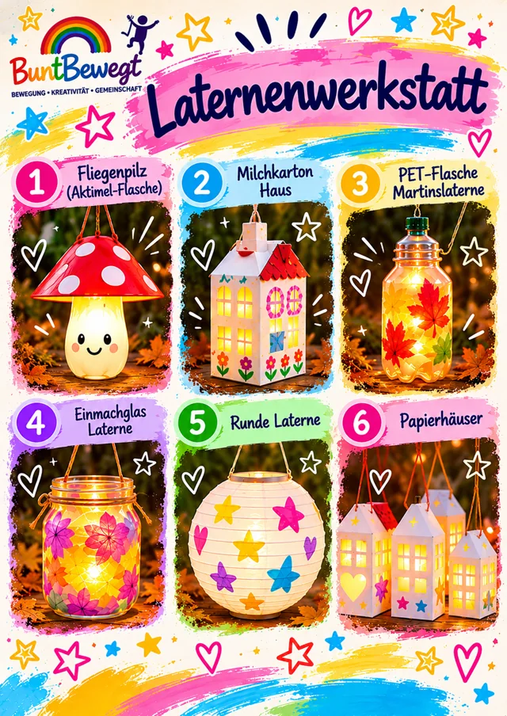
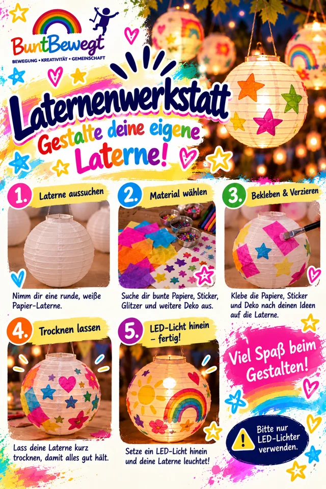
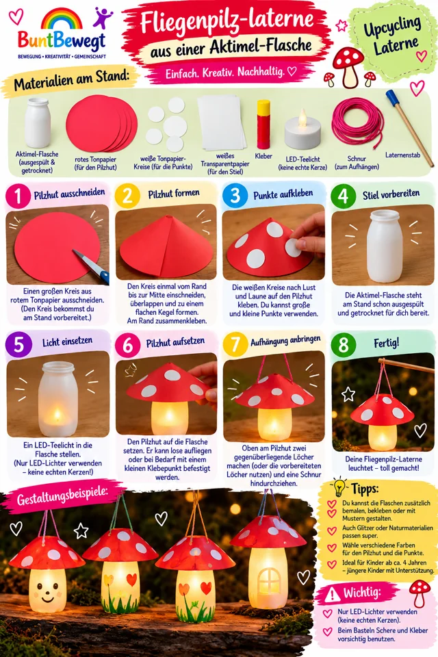
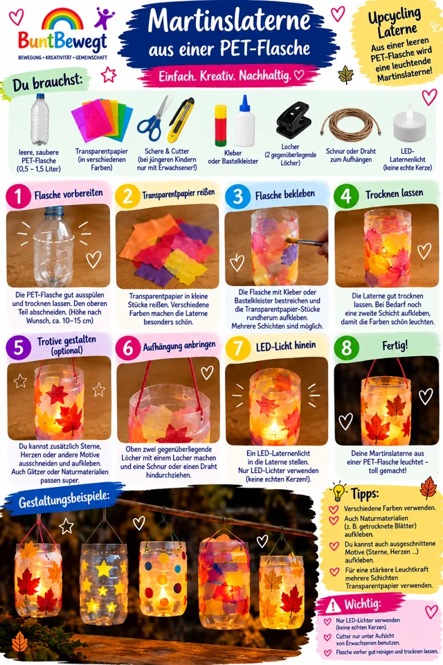
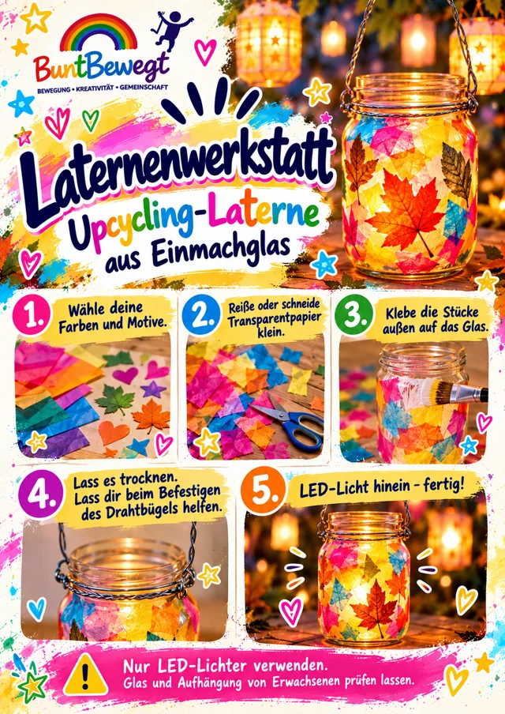
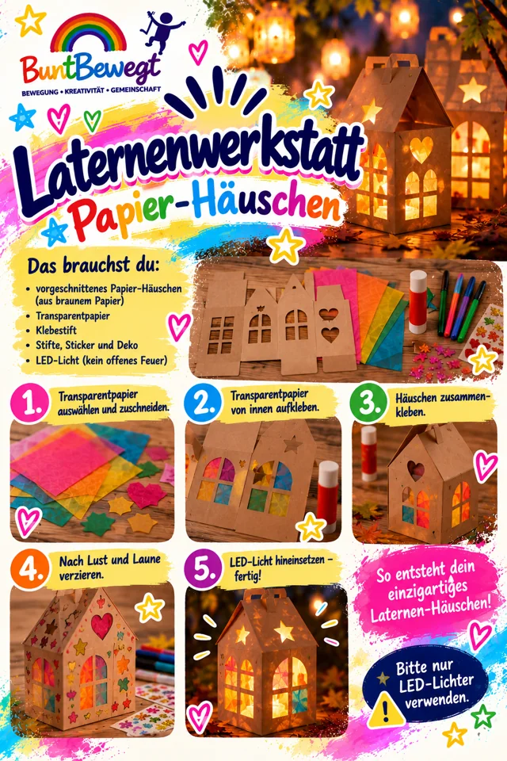
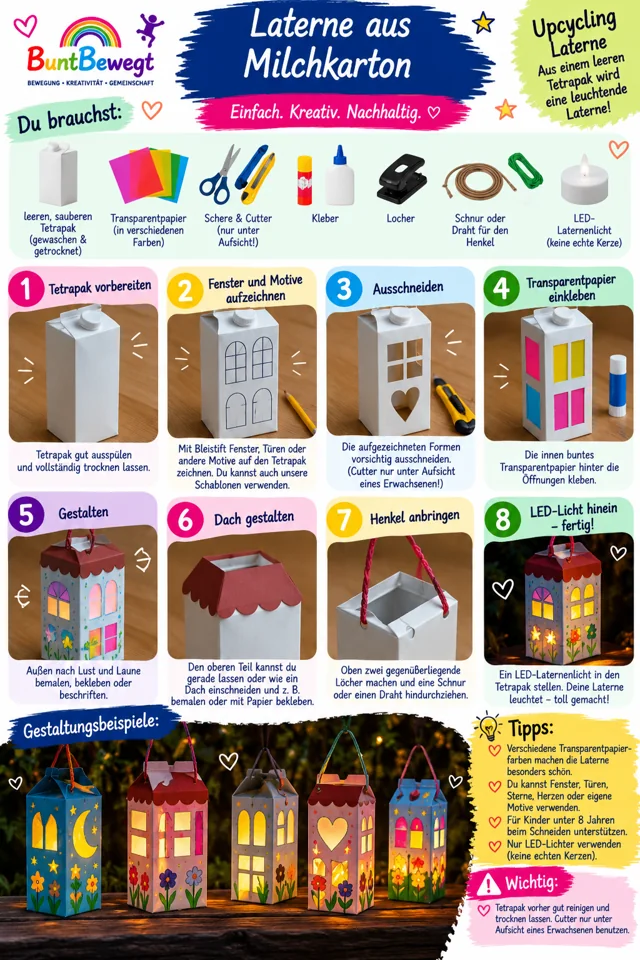

Ankündigung · Kieler Lichtermeer 2026
Eine Stadt leuchtet.
Wir machen sie bunt.
BuntBewegt bringt Kinderaugen zum Leuchten – unsere erste große Erlebniswelt beim Kieler Lichtermeer!
Sonntag, 1. November 2026 · 13–18 Uhr
Bernhard-Minetti-Platz, Holtenauer Straße, Kiel


Ein ganz besonderer Meilenstein für BuntBewegt! Am Sonntag, den 1. November 2026, verwandeln wir den Bernhard-Minetti-Platz in der Holtenauer Straße in eine bunte Erlebniswelt für Kinder und Familien. Von 13 bis 18 Uhr erwartet euch ein abwechslungsreiches Programm voller Kreativität, Bewegung und gemeinsamer Abenteuer – betreut von unserem zehnköpfigen BuntBewegt-Team!
Unsere zweite Zusammenarbeit mit KielMarketing – und diesmal wird es richtig groß!
Nach unserer erfolgreichen Premiere beim Kieler Bauern- und Regionalmarkt freuen wir uns auf die nächste gemeinsame Veranstaltung mit KielMarketing.
Beim Kieler Lichtermeer 2026 dürfen wir erstmals nicht nur einzelne Angebote präsentieren, sondern einen ganzen Erlebnisbereich mit verschiedenen Mitmachstationen gestalten und betreuen.
Für unser junges Unternehmen ist das ein weiterer großer Schritt.
Was im Juni mit unserem ersten Stand auf der Kieler Woche begann, entwickelt sich nun zu einem vielseitigen Veranstaltungskonzept, bei dem Kinder und Familien unterschiedliche Angebote entdecken und selbst entscheiden können, worauf sie gerade Lust haben.
Ob kreativ werden, gemeinsam spielen, sich schminken lassen oder einfach etwas Neues ausprobieren – bei unserer Erlebniswelt ist für jeden etwas dabei!
Unsere Laternenwerkstatt – kleine Kunstwerke für das Lichtermeer!
Passend zum Motto des Lichtermeeres wird es bei BuntBewegt eine eigene Laternenwerkstatt geben.
Hier können Kinder ihrer Kreativität freien Lauf lassen und mit unterschiedlichen Materialien basteln, malen und gestalten.
Neben klassischen Bastelangeboten stehen auch kreative Upcycling-Ideen auf dem Programm. Aus einfachen Alltagsmaterialien können mit etwas Fantasie einzigartige Laternen und kleine Kunstwerke entstehen.
Dabei dürfen die Kinder selbst ausprobieren, Farben kombinieren, verzieren und ihre eigenen Ideen umsetzen.
Unser Ziel: Jedes Kind soll mit Freude etwas Eigenes erschaffen können.
Und vielleicht leuchtet am Abend sogar die eine oder andere selbst gestaltete Laterne durch die Kieler Straßen!
Kinderschminken und Glitzer-Tattoos – natürlich mit dabei!
Was wäre eine BuntBewegt-Veranstaltung ohne unsere bunten Schminkpinsel?
Auch beim Lichtermeer dürfen sich die Kinder wieder auf fantasievolle Schminkmotive und funkelnde Glitzer-Tattoos freuen.
Ob Schmetterlinge, Tiger, Einhörner, Superhelden oder individuelle Wunschmotive – unser Team sorgt für kleine Verwandlungen und strahlende Gesichter.
Besonders freuen wir uns darauf, wieder bekannte Gesichter aus vergangenen Veranstaltungen zu begrüßen.
Denn mittlerweile treffen wir immer häufiger Familien, die BuntBewegt bereits von der Kieler Woche, dem Seebrückenfest oder dem Bauern- und Regionalmarkt kennen.
Spielen, ausprobieren und gemeinsam lachen!
Neben unseren Kreativangeboten erwartet die Familien ein abwechslungsreicher Spielbereich.
Hier darf gemeinsam gespielt, geknobelt, ausprobiert und natürlich auch ein bisschen gewetteifert werden!
Mit dabei sind unter anderem:
- Riesenschach – für kleine und große Strateginnen und Strategen.
- Mensch ärgere dich nicht – der Spieleklassiker im Großformat.
- Vier gewinnt – wer schafft es zuerst, vier Steine in eine Reihe zu bringen?
- Unsere Wippe – gemeinsam das Gleichgewicht finden und Bewegung erleben.
- Spieleküche – für kleine Köchinnen und Köche mit großer Fantasie.
- Seifenblasen – für schillernde Momente und jede Menge Spaß.
Dabei geht es uns nicht nur um Beschäftigung, sondern vor allem um gemeinsame Erlebnisse.
Kinder können neue Spiele entdecken, miteinander in Kontakt kommen und zusammen mit ihren Eltern oder Geschwistern aktiv werden.
Denn manchmal entstehen die schönsten Erinnerungen bei einem ganz einfachen gemeinsamen Spiel.
Zehn BuntBewegt-Teammitglieder – gemeinsam schaffen wir eine Erlebniswelt!
Auch für unser Team wird das Lichtermeer eine besondere Herausforderung.
Zum ersten Mal werden wir mit zehn BuntBewegt-Helferinnen und -Helfern gleichzeitig eine Veranstaltung begleiten!
Während einige Teammitglieder die Laternenwerkstatt betreuen, kümmern sich andere um Kinderschminken, Glitzer-Tattoos und unsere verschiedenen Spielstationen.
Damit setzen wir erstmals ein größeres Veranstaltungskonzept um, bei dem mehrere Angebote parallel stattfinden und von unserem Team eigenständig betreut werden.
Für uns ist das ein weiterer wichtiger Schritt in der Entwicklung von BuntBewegt.
Innerhalb weniger Monate ist aus einer kleinen Idee ein wachsendes Team entstanden, das gemeinsam immer größere Projekte verwirklicht.
Und genau darauf freuen wir uns beim Lichtermeer besonders: Gemeinsam etwas auf die Beine zu stellen, das vielen Kindern und Familien Freude bereitet!
Noch mehr entdecken: Leseecke und Kuchenverkauf
Auch rund um unsere BuntBewegt-Erlebniswelt gibt es weitere schöne Angebote für Familien.
In der gemütlichen Leseecke von Kiel.Sailing.City können kleine und große Bücherfans in spannende Geschichten eintauchen und zwischen den verschiedenen Aktivitäten eine entspannte Pause einlegen.
Direkt neben unserem Erlebnisbereich sorgen außerdem Schülerinnen und Schüler des Abiturjahrgangs mit einem Kuchenverkauf für eine süße Stärkung.
So entsteht auf dem Bernhard-Minetti-Platz ein vielseitiger Treffpunkt, an dem Kinder spielen, basteln und entdecken können, während Familien gemeinsam Zeit verbringen.
Wir freuen uns auf ein leuchtendes Kieler Lichtermeer!
Das Kieler Lichtermeer ist für uns nicht nur die zweite Zusammenarbeit mit KielMarketing, sondern auch der bisher umfangreichste Einsatz unseres BuntBewegt-Teams.
Mit unserer ersten großen Erlebniswelt möchten wir zeigen, wie vielseitig Kinder- und Familienprogramme gestaltet werden können.
Wir bedanken uns bei KielMarketing für das erneute Vertrauen und die Möglichkeit, unsere Ideen in diesem Umfang umzusetzen.
Hier findet ihr unsere BuntBewegt-Erlebniswelt:
Sonntag, 1. November 2026
13:00–18:00 Uhr
Bernhard-Minetti-Platz, Holtenauer Straße, Kiel
Laternenwerkstatt | Kinderschminken | Glitzer-Tattoos | Spielstationen | Seifenblasen
Für Kinder und Familien
Kommt vorbei, bringt eure Familie mit und entdeckt unsere bunte Erlebniswelt!
Wir freuen uns auf euch und einen unvergesslichen Tag voller Licht, Farbe und Gemeinschaft.
BuntBewegt – Bewegung. Kreativität. Gemeinschaft.
Aus kleinen Ideen wachsen große Träume.
9 Bilder zum Event
Die Laternenwerkstatt.
Zum Schauen & Selbermachen.
3 Bilder
Unsere bunte Lichterwelt.
Das Event-Motiv, die Werkstatt und die Auswahl der Laternen.


Motiv
BuntBewegt Lichterzauber
Das Willkommensmotiv für unsere bunte Erlebniswelt.
Motiv
Unsere Laternenwerkstatt
Farben, Materialien und leuchtende Ideen zum Selbermachen.


Übersicht
Welche Laterne wird deine?
Sechs unterschiedliche Motive für kleine Laternenkünstler.
6 Bilder
Sechs Ideen zum Selbermachen.
Die Anleitung öffnen, in die Leseansicht wechseln und Schritt für Schritt entdecken.


Bastelanleitung
Bunte Papierlaterne
Papier, Sticker und Farben machen jede Laterne einzigartig.


Bastelanleitung
Die kleine Fliegenpilz-Laterne
Aus einer kleinen Trinkflasche wird ein leuchtender Fliegenpilz.


Bastelanleitung
Martinslaterne aus PET
Eine PET-Flasche bekommt mit buntem Transparentpapier ein neues Leben.


Bastelanleitung
Leuchtendes Einmachglas
Buntes Papier verwandelt ein Einmachglas in eine Laterne.


Bastelanleitung
Bunte Papier-Häuschen
Kleine Fenster, bunte Farben und ein warmes LED-Licht.


Bastelanleitung
Ein Haus aus Milchkarton
Schritt für Schritt vom leeren Karton zum Laternenhaus.
Nur LED-Lichter verwenden. Erwachsene begleiten das Schneiden und prüfen Glas und Aufhängungen.